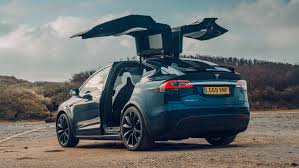
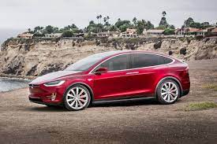

 
Tesla Model X (Тесла Модел X) – электрический кроссовер класса «К3». Мировая премьера модели состоялась 29 сентября 2015 года на заводе компании во Фримонте. В арсенале Модел X, помимо электропривода, множество любопытных особенностей, делающих этот автомобиль во многом уникальным. Например, инженерам удалось добиться удивительно низкого коэффициента аэродинамического сопротивления среди кроссоверов – всего 0,24. Кроме того, на Модел Х установлено самое большое лобовое стекло среди серийных легковых автомобилей. Плюс, американский кроссовер стал первым электрокаром, способным буксировать прицепы массой до 2268 кг. Есть у Model X и другие интересные, хоть и не такие удивительные особенности. К ним можно отнести поднимающиеся двери Falcon Wing, которые можно открыть при расстоянии в 31 см до соседней машины, а также задний спойлер, который во время движения поднимается и занимает одно из трех положений. При этом салон кроссовера может быть как 6-, так и 7-местным (посадочная формула 2+3+2 или 2+2+2). Создатели Тесла Модел X особо подчеркивают и тот факт, что автомобиль обладает высоким уровнем активной и пассивной безопасности. Не в последнюю очередь благодаря наличию фронтальной камеры, радара и автоматического торможения. А за комфорт, в частности, отвечает уникальный HEPA-фильтр, задерживающий пыльцу, бактерии и даже вирусы. Кроме того, режим "Bioweapon Defense" по своей сути работает по аналогии с технологией, применяемой в военной технике – создает повышенное давление, препятствующее проникновению любого загрязнителя через любую щель. Стиль и дизайн – это, конечно, прекрасно, но ключевыми для электромобиля являются все же ездовые характеристики. Например, запас хода на одной зарядке. У Tesla Model X он может достигать 402-414 км (в зависимости от модификации). Электромоторы версии P90D выдают 262 и 510 л. с. мощности (передний и задний соответственно), а у версии 90D распределение мощности одинаковое – по 262 «лошадки» от каждого из моторов. При этом характеристики аккумуляторов в любом случае одинаковы - 90 кВт/ч. А что касается динамики разгона с места до 97 км/час, то меньшая по мощности версия справляется с этой задачей за 4,8 секунды тогда как P90D укладывается в 3,8 секунды в стандартном исполнении, либо же в 3,2 с пакетом Ludicrous.